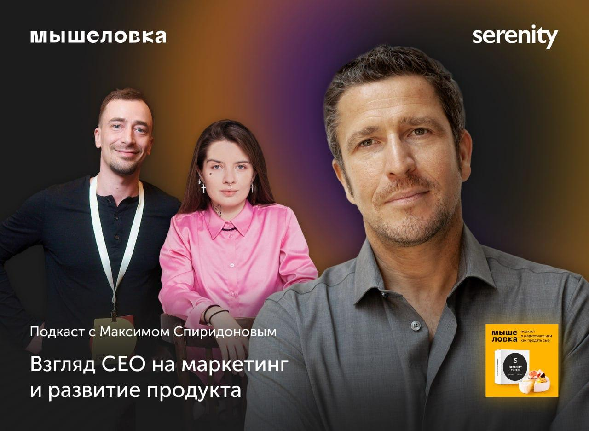

Обсудили:
— Как создать и удержать голубой океан на примере кейсов Нетологии и Фоксфорд?
— Что такое сильная стратегия, как её разработать и внедрить?
— Как создавать смысл в бизнесе и драйвить им команду?
Эпизод будет особенно полезен тем, кто работает на стыке стратегии, продукта и лидерства — основателям, продактам, управленцам.
Слушайте и делитесь впечатлениями.
